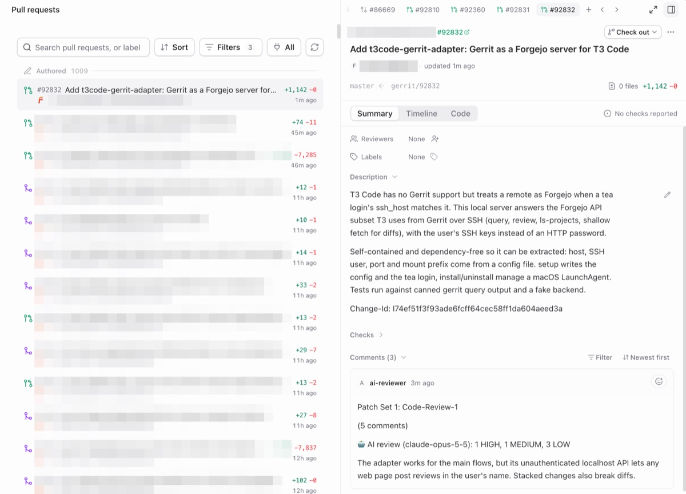

Fake It Till You Merge It
The Hands-Off saga: 1. Non-Load-Bearing · 2. Taking Over the Workspace · 3. Better Call Sol · 4. It's Time to Settle · 5. Fake It Till You Merge It
For three weeks I had a working prototype, and I didn't want to run it. Then I read about someone who hadn't built one at all. They'd built an impostor.
"Without changing the T3 app?"
My workday happens in T3 Code, an app where I run my AI coding assistants side by side. It has a tab for pull requests: code changes waiting for a colleague's review. It shows them for code on GitHub, the biggest public home for code, and a few similar services.
At work we review code in Gerrit, a code review system from Google. T3 Code doesn't know it. Last month I disguised our Gerrit links as pull requests so the app would at least file them. The tab itself stayed empty.
Three weeks ago I asked my AI: "Where does t3code get the pull requests from, is it possible to replace the pull requests sections with a gerrit search? Without changing the t3app?"
No, it said. Not without a hack: putting a small program in front of Gerrit that pretends to be one of the services T3 Code already knows.
I went the proper way instead.
A prototype I didn't want to run
The proper way was to teach T3 Code about Gerrit, in my own copy of its code. I had a second AI plan it alongside the first. They argued for three rounds until both wrote AGREED. An hour later, the Gerrit support was built and saved.
Then it hit a wall. Our Gerrit sits behind a doorman, a gateway that checks every visitor's name and password before letting them in. The access key Gerrit gave me never got past him. I filed a ticket to discuss how tools should log in at all.
But the doorman wasn't the real problem. A Gerrit plugin inside my own copy of T3 Code meant running my own copy of T3 Code, from then on. Every update from the real app would need merging in by hand. Every bug might be mine. And it's the app I work in all day.
It was a workable solution. It was also a risk. The prototype sat there for three weeks.
"Why didn't I think of that?"
This morning I came across a post in T3 Code's community on Reddit: "T3 Code with self-hosted Bitbucket Data Center". Bitbucket is another code hosting service. T3 Code supports its cloud version, not the one companies run on their own servers. "If you're stuck on Bitbucket DC at work like I am, give it a try."
So the author had written an adapter, a translator that runs on their computer and makes their company's server look like the cloud one. Four words in the post got me hooked: "No fork, no patch." No copy of the app to keep up to date, no changes to the app itself.
Why didn't I think of that?
"I could also be wrong"
I sent my AI the link and asked whether we could go that route instead. It read the adapter and said: "I'd stay with the custom provider." My own Gerrit plugin, in other words. The code was already written, after all.
I pushed back. "In my opinion, it would be easier to spoof a service and get it working instead of trying to get it into T3 code, we can do that as well, but that is way more effort than spoofing one. In my opinion, but I could also be wrong."
"Partly right," it answered. And then it found the better disguise: "Best service to spoof: Forgejo, not Bitbucket."
Forgejo. The same hack it had offered me three weeks earlier.
Forgejo is a free code hosting service, and T3 Code already speaks it. One of the ways T3 Code talks to Forgejo is a little tool called tea. It remembers logins and talks to services. One new login entry, pointing at the adapter on my Mac, and instead of talking to Forgejo, T3 Code was unknowingly talking to Gerrit.
It had been a busy week of reaching for Java. This weekend, I decided to relax with some tea.
It even avoids the one catch of the Bitbucket adapter that inspired it: no special shortcut to start T3 Code. If the adapter ever causes trouble, I delete the login entry and it's gone.
The adapter talks to Gerrit the way my AIs already do, so the login isn't even an issue.
"Yes, let's do a spike." A spike is a short experiment that answers one question, not a finished feature. This one's question: will the official app believe the disguise?
The first made-up pull request showed up in T3 Code a quarter of an hour later. A few minutes after that, I pulled to refresh in T3 Code's iPad app, and all our changes were there, with their descriptions and the code that changed.
The adapter's log became my wishlist
I typed a comment on one of the changes and hit send.
The adapter didn't know comments yet. It answered "not found", and my AI, watching its log, noticed: "Someone just tried to post a comment … If that was you, the comment did not reach Gerrit."
"I think I want the comment feature, which is easy to create, right?"
It was. A few minutes later I typed "Test" on the iPad, and in Gerrit, under my name, appeared "Patch Set 1: Test".
That became the rhythm. I tried something in T3 Code and got an error. My AI was listening in the background and asked if I wanted it. I said yes, and it translated it into Gerrit's language. Closing and reopening a pull request became possible. Even the actions that don't translate well got a version: they leave a comment on the change in Gerrit instead.
When my AI told me I could approve inside T3 Code, I was hyped. Then I couldn't find the button. It turns out Forgejo doesn't let you approve your own work, and the change I was testing on was mine. Even the impostor had to follow Forgejo's rules.
"found it and close reopen worked :D"
From Reddit post to working in a little over an hour. The proper way had sat untouched for three weeks.
Links, fixed on the way
The reason I'd picked this up this morning wasn't the empty tab. A recent test version of T3 Code had broken my disguised links. Clicking one opened a side panel that couldn't load the pull request, with no way out to Gerrit. A separate AI found what changed and wrote a fix.
But a link like mine has to change disguises for everyone who looks at it. The first one was for T3 Code: look like a pull request, so it gets filed. Now, through the impostor, T3 Code knows what to do with it again and opens it in the browser.
The last disguise is for Gerrit, so it accepts the link as one of its own. That one needed fixing too.
With the impostor running, I clicked a link in T3 Code again.
It worked.
The fix for T3 Code is still sitting unused. It doesn't need to go anywhere.
Fake it till you merge it
The spike didn't stay a spike. The adapter now lives in our team's shared collection of helper scripts, in its own folder, with its own instructions and 31 tests. Nothing in its code knows our company's name, in case I want to give it away one day.
Then I sent it in for review, like any other change, and opened it in T3 Code. My change, served by my impostor, in my own window. Our AI reviewer had already been there, and it voted against it:
The adapter works for the main flows, but its unauthenticated localhost API lets any web page post reviews in the user's name.
The impostor could be impersonated. I fixed that before finishing this post. Even then, Sol, the AI I ask for a second opinion, wouldn't approve it.

Fake it till you merge it. It isn't merged yet.
The prototype from three weeks ago is still there. Built, reviewed, ready to be run. It never will be.
I went back to the Reddit post and thanked the author: "Thanks for the inspiration. I now have a Gerrit integration spoofing Forgejo as a hook!!!"
T3 Code still thinks our code review system is Forgejo. I haven't told it.
The disguise only drops when the browser opens.